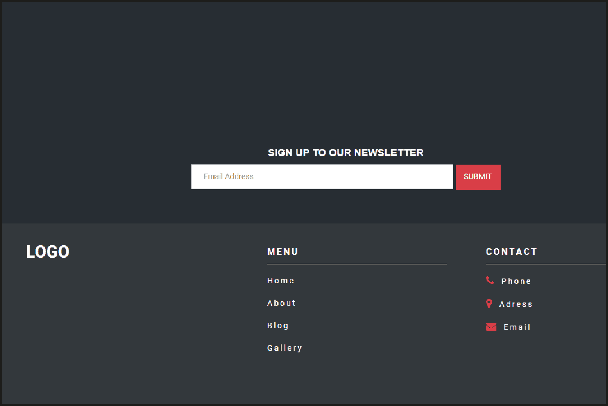

Footer.
Ideas principales:
Footer.
Elementos:
- Redes sociales
- Redes sociales
- Copyright/créditos
- Sellos de confianza
- CTA
- Sitemap
- Formulario de suscripción
- Newsletter
- Logo
Apuntes de clase:
A pesar de ser una sección olvidada, no quita que sea una parte muy importante si se realiza adecuadamente. El footer es un espacio genérico, o sea, que se mantiene constante a lo largo del sitio web.
Tiene que tener los siguientes elementos:
- Textos legales: condiciones de uso, políticas de privacidad, un aviso legal.
- Redes sociales.
- Copyright/créditos.
- Sellos de confianza.
- CTA: llamado a la acción por sus letras en inglés.
- Sitemap: un mapa del sitio web.
- Formulario de suscripción.
- Newsletter: un boletín informativo.
- Logo.

Resumen de la clase:
A pesar de ser una sección olvidada, el footer es una parte importante de un sitio web, ya que se mantiene constante a lo largo del mismo y posee información valiosa. Debe incluir elementos como textos legales, redes sociales, copyright/créditos, sellos de confianza, CTA, sitemap, formulario de suscripción, newsletter y logo.